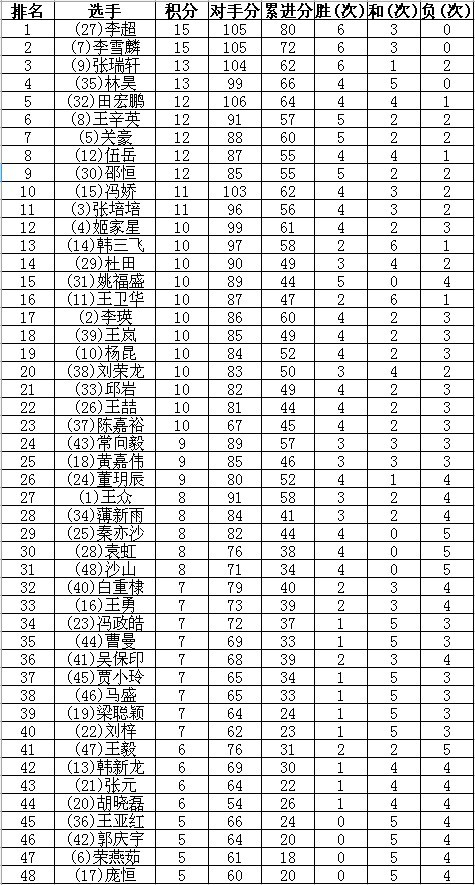

恭喜牛牛 恭喜毒狼 恭喜梦姐 恭喜小马 恭喜雅匪 恭喜胖胖 恭喜鬼灵 恭喜王鹏 恭喜王清清 恭喜业余组的所有朋友！ 大家被客气 一人给我一朵花就行了 我要发财了！
恭喜牛牛 恭喜毒狼 恭喜梦姐 恭喜小马 恭喜雅匪 恭喜胖胖 恭喜鬼灵 恭喜王鹏 恭喜王清清 恭喜业余组的所有朋友！ 大家被客气 一人给我一朵花就行了 我要发财了！
专业组前八名
1.祁观 6.5
2.杜卫鹏 6 五胜二和
3.刘洪平 4.5 女
4.齐光威 4.5
5.陈亮 4
6.殷桐 4
7.尚龙 4 网名鬼灵
8.王鹏 3.5 网名妖怪小 四川省
女子优胜奖：汪清清
业余组前四十八名

女子优胜奖：冯娇
（7）
［此帖子已被 ￡西北狼★记 在 2011-9-27 22:23:39 编辑过］
［ 雅山看黄昏 于 2011-9-28 14:54:35 时花20金币送鲜花一朵］
［ 雅匪 于 2011-9-27 22:48:58 时花20金币送鲜花一朵］
业余组的和棋是指一胜一负？怎么这么多
女子优胜是啥意思
［ 雅匪 于 2011-9-27 22:49:06 时花20金币送鲜花一朵］
［ 雅匪 于 2011-9-27 22:49:14 时花20金币送鲜花一朵］
引用：
原文由 屏蔽 发表于 2011-9-27 22:28:27 :业余组的和棋是指一胜一负？怎么这么多
女子优胜是啥意思
1.应该是吧
2.为鼓励更多的爱好者特别是女爱好者，除过获得名次的选手外，取成绩最好的女选手做为女子优胜奖获得者
恭喜牛牛 恭喜毒狼 恭喜梦姐 恭喜小马 恭喜雅匪 恭喜胖胖 恭喜鬼灵 恭喜王鹏 恭喜王清清 恭喜业余组的所有朋友！ 大家被客气 一人给我一朵花就行了 我要发财了！
［ 雅匪 于 2011-9-27 22:48:40 时花20金币送鲜花一朵］
［ 王小 于 2011-9-28 9:45:01 时花20金币送鲜花一朵］

［ 雅匪 于 2011-9-28 14:10:53 时花20金币送鲜花一朵］
板凳~~
［ 雅匪 于 2011-9-28 14:11:01 时花20金币送鲜花一朵］
［ 雅匪 于 2011-9-28 14:11:07 时花20金币送鲜花一朵］